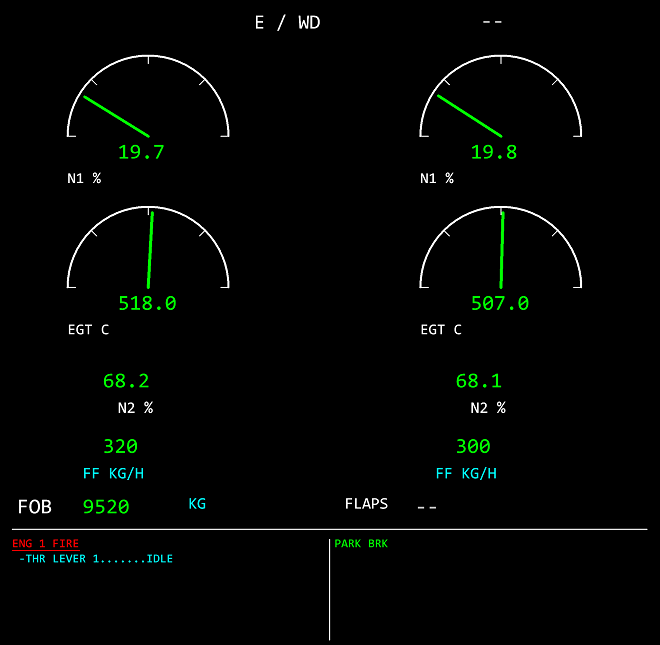

Górny ekran ³¹czy N1, EGT, N2 i przep³yw paliwa dla obu silników z FOB, konfiguracj¹ klap oraz obszarem komunikatów. N1 i EGT maj¹ ³uki oraz odczyt cyfrowy; N2 i FF pozwalaj¹ porównaæ pracê silników. FOB jest pozosta³¹ iloœci¹ paliwa, nie sum¹ zu¿ycia.
Dolna czêœæ E/WD zawiera ostrze¿enia i memo odtworzone z obs³ugiwanych flag oraz katalogów. Nie jest przechwyconym obrazem oryginalnego ECAM. Komunikat zale¿y od danych i fazy lotu; stary plik bez odpowiednich flag nie potwierdza braku awarii. Ten ekran œledzi oœ czasu niezale¿nie od rêcznie wybranej strony dolnego ECAM.
